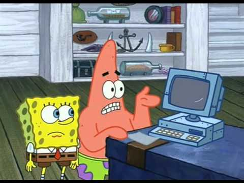

Connor Jones Project Me 2017
Chapter 1: Who am I?
Who am I. Thats a question I am going to answer. This is a ruff draft so I am going to kind of ramble off and then I can ALWAYS format it later and make it look all pretty. Well my name is Connor Jones and I am in 10th grade. Ive been going to rockwell for two years now. This is my second year now.
Now this stuff is the boring old stuff but its the basic stuff. Ill finish with that and then we will get to the good stuff that I really take pride in about my self. I live with 4 people and two dogs one of them is really old at the moment and might pass away. So those four people I was just talking about they consist of my mom, dad, Brother and sister, The dog’s name’s are Tally(the old one) and Murphy(my dog) there my family. SO ill just start getting into the stuff thats really about ME! But! Before then ill talk to you about the reason why I want to write this in MY words and not just do the bare minimum and get a grade and move on. Yes this is an ASSIGNMENT and yes I need to complete it to pass english 10 but I also have a purpose for this ASSIGNMENT Hopefully your my son, daughter or even wife, who KNOW’S! You could even be an alien who found this LOOONNNGGG after the earth I call home is gone.
But I want to document me onto this Book. You could even think it as Me printing a copy of my brain on to a peace of paper to live on forever. No ill ramble off some more. Currently I am listening to Need you by Dillion Francis & nightmare. I also just said that because Music, Im just going to explain how my brain works some more. Try and give you a candle to my maze. So I purposely connected my memories everymoment ive wanted to keep forever or Really enjoyed I took 15 minutes to listen to 3 songs
now what that does is it makes ANOTHER bridge for my brain connecting that memory to that song. My grandmother died from allstimers no ive als o done that so If I get it to I have a phyisical connection to my memories so if I cant recall stuff on my own I can just turn on some music and have memorites, good memories start flowing to my head. Its pretty fantastic. So reader there’s one fun fact about my head. Like now the song Vibration’s by Ephwurd just came on now ill give you an exsample about that song, I listened to that song when we went camping in our family jeep up at american fork canyon. Which I really enjoyed and had good memories. Like one thing that happened there was we layed down a blanket for a picnic and then we where talking having fun I could smell the tree’s and the cool brease was running along my cheek. I was laying against the trunk of the tree it could feel its hard rough bark against my back. Then here’s the funny part without noticeing we layed the blanket on top of a Red ant hill! xD we scrambled to pickup the heavy red cooler with a white lid and the blankets we rolled up and threw in the back of the jeep all while holding our sandwiches. Ahhh it was fun.
Now I think you are probly on the edge of you seat to hear more about Me and my Personality.
Ill start telling you about me in my OWN words. My name is Connor Jakob Jones my Parents are Stephanie and Jake Jones. I am in 10th grade and I am a Hacker! I now I wish there was a asccii character to empisise how proud I am of that name. DONT! Get me confused with this guy
this guy look’s like an idiot! xD I mean like dude thats now how you lock your computer im sorry man… it just does not work that way.
This is the media’s ‘laugh’s a few more times’ Picture of a hacker
 now most of the general public when you say hacker this DUDE apears in there head. Its wrong Everthing about it. Using the term hacker is such a broad term its almost Insulting to consider it as all around ILLEGAL now ima explain why its not. First of all ima do the best I can in my words but some where that explains this MUCH better would be http://ir0nin.com/ I would highly advice you to go there but ill explain it in my words. Hacking is a mindset its a Lifestyle. Hacking is a power its like owning a gun or a car you can use it for good or for bad now this DUDE! The one who is VERY confused he is the one that probly is a bad dude he probly hacks for illegal purpouses ill talk more about my part in the hacker lifestyle and the culture and the Community but im a Hacker im a modern Super hero Eveyday our world is become more and more Dependent on Technology But the more and more we are dependent on it Malicious hackers like Mr Ul7iM8 H@cK3r up there get more power and its gotten to the point where getting someone’s password literally gives the person the power to put them on the street’s now that is where it drives me insane. Its scary. Now I have seen what people can do with a laptop there’s a place in Las Vegas Where hacker’s from all over meet and Share there discovery’s and what they can do That place is Called DEFCON now I recently came back from Defcon 25 the twenty fifth Defcon so far
pg.